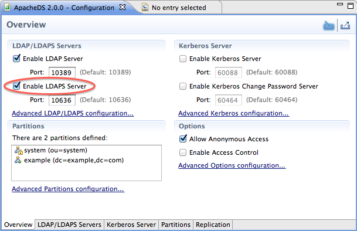
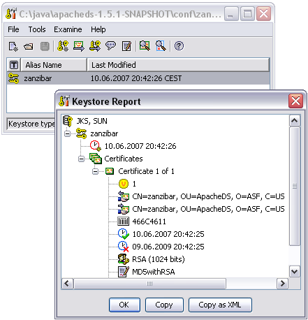
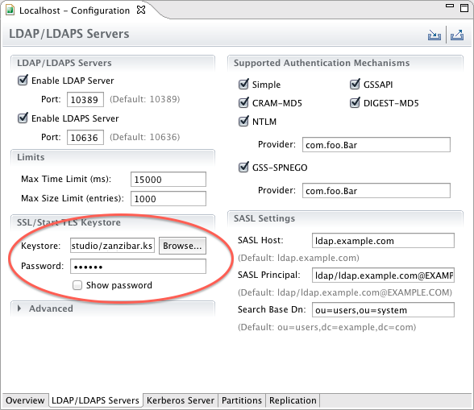
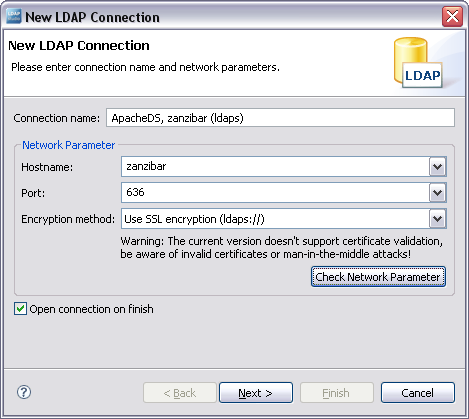
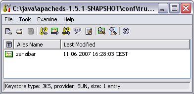

ApacheDS 2.0
Downloads
Documentation
- Basic User Guide
- Advanced User Guide
- Developer Guide
- Kerberos User Guide
- Configuration
- JavaDocs
- Cross-Reference
Support
Community
About Apache
3.3 - How to enable SSL
This section describes the transport layer security options for LDAP, and especially how to enable LDAPS on ApacheDS.
Transport layer security and LDAP
Several requirements related to security can be easily accomplished with the help of SSL technology (Secure Socket Layer) or its standardized successor TLS (Transport Layer Security, RFC 2246). Among these are the protection of data against eavesdropping and modification, when on transit between client and server (data integrity), and the authentication of a server toward a client with the help of a certificate.
There are two approaches to utilize these technologies in the LDAP world.
- ldaps (LDAP over SSL/TLS, generally on port 636)
- StartTLS (extended operation)
The first option is comparable to HTTPS and inserts an SSL/TLS layer between the TCP/IP protocol and LDAP. Establishing a connection like this is normally provided via a different server port (port 636 is common, it is a well-known port, like port 389 is for LDAP). In URIs the schema “ldaps” is specified (for instance ldaps://zanzibar:636/) instead of “ldap”. It is possible to write programs which switch between ldap and ldaps without changes in the source, if the connection data is configured external.
In the second option a client establishes at first a “normal” LDAP connection. With a special request (extended operation StartTLS) it tries to switch to secure communication afterwards. It is not necessary to change the port for this, the communication continues on the established connection. The client may go back to the original connection state (“TLS Closure Alert”), in doing so protecting only selected parts of the communication.
Both ways to utilize SSL/TLS within LDAP require the configuration of the server with an appropriate certificate.
Server configuration
ApacheDS 2.0 supports both options and requires a JDK 1.5 or above. The feature is enabled by default, but you may need to configure it. There are some steps to follow in order to obtain a SSL enabled server.
However, if one wants to use a signed certificate, another configuration is needed, where you tell the server about the keystore to use, and the certificate password to use.
In case you want ADS to generate the certificate
There is nothing to do but enabling SSL and specifying the port to use in the server configuration file :

As soon as the “Enable LDAPS server” checkbox is checked, your server is LDAPS capable !
In case you want to use an external keystore
A certificate is a signed public key (signed normally by a third party, a certificate authority, CA).
There are different options
- either you buy a certificate from a Certificate Authority (like Verisign, etc.), or you obtain one from your enterprise CA, if available
- or you ask for a free certificate from CACERT organisation
- or you create your own certificate, self-signed or signed by your private CA, which will not be trusted.
We will do it the last way (self-signed), primarily because it’s easy and fast (you won’t have to pay nor to wait to obtain your certificate)
Key creation
First it is necessary to create a key pair (public/private key) for your server, zanzibar in our case. One option is to use the JDK tool keytool for this task. In the following example, we use these options
| Command Option | Value | Description |
|---|---|---|
| -genkey | - | Command to generate a key pair |
| -keyalg | “RSA” | Algorithm to be used to generate the key pair, in our case, default is “DSA” |
| -dname | “cn=zanzibar, ou=ApacheDS, o=ASF, c=US” | The X.500 Distinguished Name to be associated with alias, used as the issuer and subject fields in the self-signed certificate |
| -alias | zanzibar | Name to refer the entry within the keystore |
| -keystore | zanzibar.ks | Keystore file location |
| -storepass | secret | Password used to protect the integrity of the keystore |
| -validity | 730 | Number of days for which the certificate should be considered valid, default is 90 |
Learn more about keytool at the manpage.
$ keytool -genkey -keyalg "RSA" -dname "cn=zanzibar, ou=ApacheDS, o=ASF, c=US" \\
-alias zanzibar -keystore zanzibar.ks -storepass secret -validity 730
Enter key password for <zanzibar>
(RETURN if same as keystore password):
$ ls -l
total 4
-rw-r--r-- 1 stefan users 1275 Jun 10 20:42 zanzibar.ks
$ keytool -list -keystore zanzibar.ks
Enter keystore password: secret
Keystore type: jks
Keystore provider: SUN
Your keystore contains 1 entry
zanzibar, Jun 10, 2007, keyEntry,
Certificate fingerprint (MD5): 95:4A:90:3D:69:09:64:84:C7:21:FD:F7:B8:82:11:8C
$
Another option is to use graphical tools for key creation like Portecle, which is basically a user-friendly front-end for keytool with comparable functionality. For a first impression see a screen shot below.

Configuring ApacheDS to use this external keystore
Enabling SSL in Apache Directory Server and using the key pair created as above is quite easy. Simply put the keystore file in the conf directory of ApacheDS, and enable ldaps. Then you just have to setup the configuration using Apache Directory Studio, feeling the required input boxes, as shown on the following picture :

The following properties were used :
| Property | Default Value | Description |
|---|---|---|
| keystoreFile | none | Path of the X509 (or JKS) certificate file for LDAPS |
| certificatePassword | changeit | Password which is used to load the LDAPS certificate file |
| port | 10636 | LDAPS TCP/IP port number to listen to |
| enableSSL | true | Sets if SSL is enabled or not |
After modification of the configuration, the server has to be restarted in order to take effect.
Verification, Clients
After restarting the server, you should have a server offering both ldap and ldaps. How to verify whether it works?
Using Apache Directory Studio to connect
Apache Directory Studio happily supports ldaps connections. Enter the connection data (hostname and port) and select “Use SSL encryption” from the dropdown, if you create or modify a connection:

Afterwards the connection behaves like LDAP does. No difference in functionality, but the transmission is secured by SSL.
Because our self-signed certificate is not trustworthy, many tools will present a warning (as Studio). You will likely be able to view the certificate, and decide to continue (accepting the certificate always or this session only), like with web browsers.
Other clients, Java programs using JNDI
If you use other graphical clients, the behavior will be comparable. Sometimes clients don’t allow to connect to a server, if the certificate is not trustworthy. This is for instance the case for Java clients using JNDI.
The following simple Java program tries to connect via JNDI/JSSE (Java Secure Socket Extension) and LDAPS to ldaps://zanzibar:10636
import java.util.Hashtable;
import javax.naming.*;
import javax.naming.directory.*;
public class ConnectWithLdaps {
public static void main(String[] args) throws NamingException {
Hashtable env = new Hashtable();
// Simple bind
env.put(Context.SECURITY_AUTHENTICATION, "simple");
env.put(Context.SECURITY_PRINCIPAL,
"cn=Horatio Hornblower,ou=people,o=sevenSeas");
env.put(Context.SECURITY_CREDENTIALS, "pass");
env.put(Context.INITIAL_CONTEXT_FACTORY,
"com.sun.jndi.ldap.LdapCtxFactory");
env.put(Context.PROVIDER_URL, "ldaps://zanzibar:636/o=sevenSeas");
DirContext ctx = new InitialDirContext(env);
NamingEnumeration enm = ctx.list("");
while (enm.hasMore()) {
System.out.println(enm.next());
}
enm.close();
ctx.close();
}
}
It causes a CommunicationException, if the certificate is not trusted:
$ java ConnectWithLdaps
Exception in thread "main" javax.naming.CommunicationException:
simple bind failed: zanzibar:636
[Root exception is javax.net.ssl.SSLHandshakeException:
sun.security.validator.ValidatorException: PKIX path building failed:
sun.security.provider.certpath.SunCertPathBuilderException:
unable to find valid certification path to requested target]
at com.sun.jndi.ldap.LdapClient.authenticate(Unknown Source)
...
In order to make the client trust our server, one option is to share a self signed certificate. So we export the certificate (DER format) using keytool like this:
$ keytool -export -keystore zanzibar.ks -alias zanzibar -file zanzibar.cer
Enter keystore password: secret
Certificate stored in file <zanzibar.cer>
$ ls -l
total 6
-rw-r--r-- 1 stefan users 504 Jun 10 21:51 zanzibar.cer
-rw-r--r-- 1 stefan users 1275 Jun 10 20:42 zanzibar.ks
$
Please note that you don’t want to share the server keystore file itself with arbitrary clients, because it holds the private key. Instead we create a separate keystore trusted.ks with the help of keytool. We import the certificate zanzibar.cer like this:
$ keytool -import -file zanzibar.cer -alias zanzibar -keystore trusted.ks -storepass secret
Owner: CN=zanzibar, OU=ApacheDS, O=ASF, C=US
Issuer: CN=zanzibar, OU=ApacheDS, O=ASF, C=US
Serial number: 466c4611
Valid from: Sun Jun 10 20:42:25 CEST 2007 until: Tue Jun 09 20:42:25 CEST 2009
Certificate fingerprints:
MD5: 95:4A:90:3D:69:09:64:84:C7:21:FD:F7:B8:82:11:8C
SHA1: C5:63:E0:DA:BB:C8:0E:E8:27:D0:91:1D:28:DD:11:BB:93:21:13:C9
Trust this certificate? [no]: yes
Certificate was added to keystore
$ keytool -list -keystore trusted.ks -storepass secret
Keystore type: jks
Keystore provider: SUN
Your keystore contains 1 entry
zanzibar, Jun 11, 2007, trustedCertEntry,
Certificate fingerprint (MD5): 95:4A:90:3D:69:09:64:84:C7:21:FD:F7:B8:82:11:8C
$
Instead of using the command line version of keytool, it is also possible to perform the certificate export and import operations with Portecle or any other graphical frontend. This is for instance how the trusted.ks files with the imported certificate looks like in Portecle.

Clients may use this keystore in order to connect to the server. Therefore they can configure trusted.ks as the trusted store via the environment like this:
$ java -Djavax.net.ssl.trustStore=trusted.ks ConnectWithLdaps
ou=people: javax.naming.directory.DirContext
ou=groups: javax.naming.directory.DirContext
Another option would be to import the certificate in the default keystore of the JRE installation (within $JAVA_HOME/jre/lib/security). For a test certificate this proceeding is not appropriate.
Troubleshooting
In practice connection establishment with LDAP over SSL may lead to various problems. In order to eliminate the errors it is helpful to see communication-specific debug information. The system property javax.net.debug is available for this task. The value “ssl” provides information about the certificates in the used key store, the server certificate, and the steps during establishing of the SSL connection (handshake):
$ java -Djavax.net.ssl.trustStore=trusted.ks -Djavax.net.debug=ssl ConnectWithLdaps
setting up default SSLSocketFactory
use default SunJSSE impl class: com.sun.net.ssl.internal.ssl.SSLSocketFactoryImpl
class com.sun.net.ssl.internal.ssl.SSLSocketFactoryImpl is loaded
keyStore is :
keyStore type is : jks
keyStore provider is :
init keystore
init keymanager of type SunX509
trustStore is: trusted.ks
trustStore type is : jks
trustStore provider is :
init truststore
adding as trusted cert:
Subject: CN=zanzibar, OU=ApacheDS, O=ASF, C=US
Issuer: CN=zanzibar, OU=ApacheDS, O=ASF, C=US
Algorithm: RSA; Serial number: 0x466c4611
Valid from Sun Jun 10 20:42:25 CEST 2007 until Tue Jun 09 20:42:25 CEST 2009
init context
trigger seeding of SecureRandom
done seeding SecureRandom
instantiated an instance of class com.sun.net.ssl.internal.ssl.SSLSocketFactoryImpl
%% No cached client session
*** ClientHello, TLSv1
...
You should be able to determine any SSL-related configuration problem with the help of this log.
Resources
- Java Secure Socket Extension (JSSE)
- Portecle a free UI application for creating, managing and examining keystores
- SSL 3.0 Specification (Netscape)